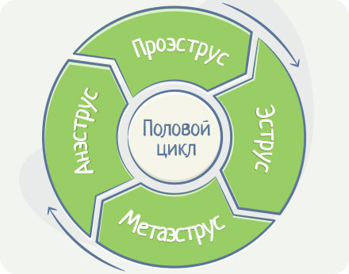
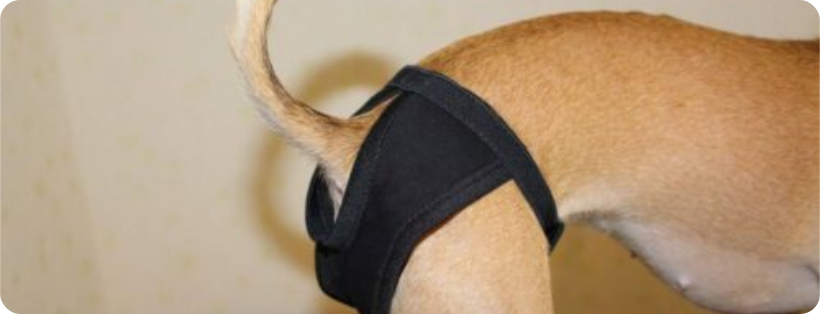

ТЕЧКА У СОБАКИ: КАК УХАЖИВАТЬ

ЧТО ТАКОЕ ТЕЧКА?
Течка, или эструс – это нормальный период в жизни нестерилизованной самки. В это время собака готова к вязке и продолжению рода. Чтобы не произошло неприятностей вроде нежелательной беременности или запланированной, но бесплодной вязки, владелец должен знать основные признаки наступления течки у собаки. В это время сука требует повышенного внимания в плане как гигиены, так и дисциплины. Гормоны могут спровоцировать побег даже у самой послушной собачки, так что на прогулке не следует даже на минуту отпускать поводок. Уход за самкой в эструсе немного отличается от обычных гигиенических процедур. В этой статье мы познакомим вас с физиологическими причинами течки, немного расскажем о половом цикле собак, уходовых средствах и контрацептивах для сук.
СТАДИИ ПОЛОВОГО ЦИКЛА
Течка (пустовка) у собак начинается в 6–12 месяцев в зависимости от породы и повторяется в среднем каждые 6–7 месяцев. Последняя течка может быть как в 6, так и в 10 лет. Забеременеть сука может как в первую, так и в последнюю течку. Регулярность течек составляет 1–2 раза в год в зависимости от породы и здоровья суки.
Половой цикл у собак состоит из четырех стадий.

ПЕРВАЯ ТЕЧКА: КОГДА НАСТУПАЕТ И ЧТО ДЕЛАТЬ
Обычно первая течка у собак наступает уже после выпадения молочных зубов, ближе к 6 месяцам. У крупных, тяжелых пород первая течка может отмечаться и в 12–18 месяцев. У чау-чау, басенджи и некоторых других пород бывает скрытая течка. Это состояние, когда при нормальной овуляции практически отсутствуют внешние признаки течки. В первую течку сук не вяжут. Даже если у вас племенное животное, никогда не вяжите его в первую течку. Организм слишком юн, не до конца сформировался и отдаст слишком много ресурсов, чтобы выносить щенков. У некоторых молодых сук первая течка может протекать почти незаметно. Если в это время произойдет вязка, собака способна забеременеть. Средняя продолжительность собачьей течки – 21 день. У некоторых животных этот процесс может длиться до 4 недель.
СРЕДСТВА ДЛЯ ПРЕРЫВАНИЯ И ЗАДЕРЖКИ ТЕЧКИ
Обычно первая течка у собак наступает уже после выпадения молочных зубов, ближе к 6 месяцам. У крупных, тяжелых пород первая течка может отмечаться и в 12–18 месяцев. У чау-чау, басенджи и некоторых других пород бывает скрытая течка. Это состояние, когда при нормальной овуляции практически отсутствуют внешние признаки течки. В первую течку сук не вяжут. Даже если у вас племенное животное, никогда не вяжите его в первую течку. Организм слишком юн, не до конца сформировался и отдаст слишком много ресурсов, чтобы выносить щенков. У некоторых молодых сук первая течка может протекать почти незаметно. Если в это время произойдет вязка, собака способна забеременеть. Средняя продолжительность собачьей течки – 21 день. У некоторых животных этот процесс может длиться до 4 недель.
